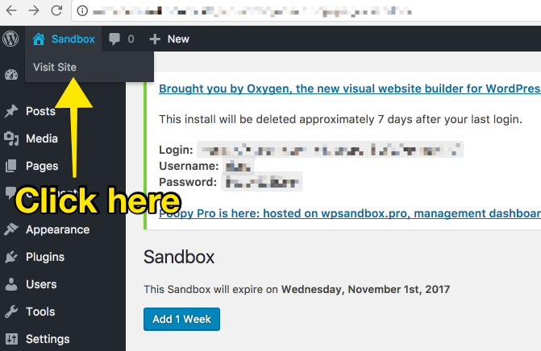
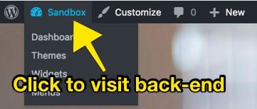
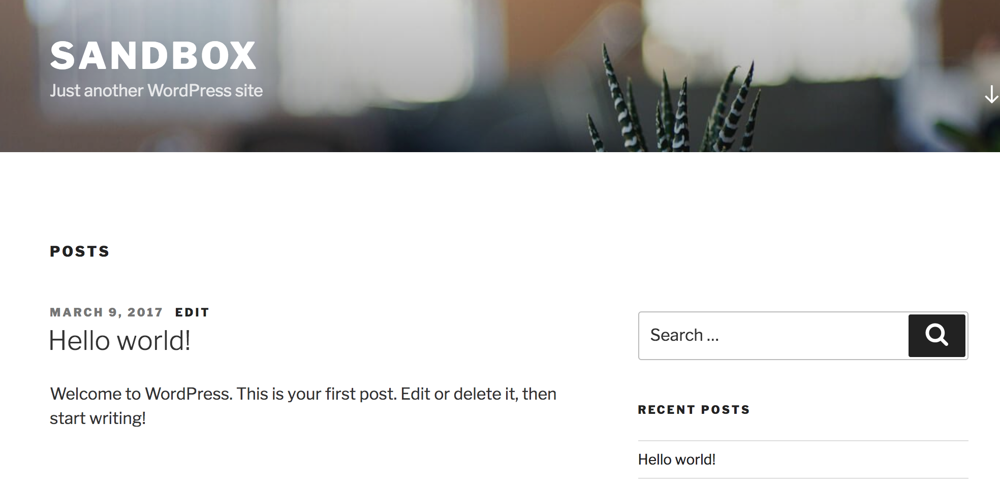
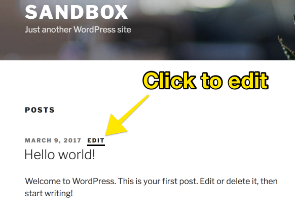
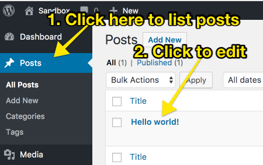

<h2>GDI WordPress Workshop</h2> <p>Let's learn about what WordPress can do for you.</p> <img src="img/circle-gdi-logo.png" class="no-bg">
### Welcome! Girl Develop It is here to provide affordable and accessible programs to learn software through mentorship and hands-on instruction. Some "rules" - We are here for you! - Every question is important. - Help each other. - Have fun!
### Welcome! Tell us about yourself. - What do you like to be called? - What do you hope to get out of this workshop?
### What are we going to do? - Introduction to WordPress - Setting up a WordPress site - Posts and Pages and Widgets - Plugins and Themes
### What is WordPress? - Started in 2003 as a blogging tool. - Has become one of the most popular web publishing platforms. - Powers a massive 28% of the web. - Can be used to create any kind of website, store, or app.
### WordPress.org WordPress is open-source software. It is **freely** available and can be downloaded at [WordPress.org](https://WordPress.org). However, the software must be run on a **web host**. Public web hosts use bandwidth which has a **cost**.
### WordPress.org There are many companies that offer **web hosting** as a product. eg: GoDaddy, WPEngine, Dreamhost, Bluehost, etc.
### WordPress.org vs. WordPress.com The co-founder of WordPress also created [WordPress.com](https://WordPress.com). This is also a public web host, but you can use it to create WordPress sites for **free**. These free sites have **limitations**: - Advertisements - Cannot install unapproved plugins or themes
### Creating a Site Let's create a WordPress site! There is a great tool by [Soflyy](http://soflyy.com/) that makes temporary WordPress sites: http://poopy.life/create
### Viewing your Site 
### Front and Back End Each WordPress site has a "Front" and a "Back" end. The **Front** is what people will see who visit the site. The **Back** is what you use to build and manage your site.
### Going to the Back End To switch to the Back end, use the **Masterbar**. 
### Going to the Front End To switch to the Front end, also use the **Masterbar**.
### WordPress started out for Blogs WordPress was originally made for blogs. That has changed, but it explains many things.
### The Default Home Page The home page will usually start with a list of blog posts. 
### Posts and Pages The two main things you can create in WordPress are **Posts** and **Pages**.
### Posts and Pages Both Posts and Pages have a **title**, a **body**, and **meta-data** (information about the post or page).
### Posts A **Post** is stored by the date it was published. It can be used for blog posts, but also for any content that can be shown in a list, like photos, recipes, products, etc.
### Pages A **Page** is stored just by its title. It can be used for a home page, a information page, a store, an app, or anything else.
### Editing a Post There are two ways to edit a posts, from the **Front** end or the **Back** end.
### Editing from the Front End To edit a post from the Front end of a site, look for a link that reads **"edit"** somewhere near the post title or body. The exact location varies by theme. 
### Editing from the Back End To edit a post from the Back end of a site, visit the **Posts** section. 